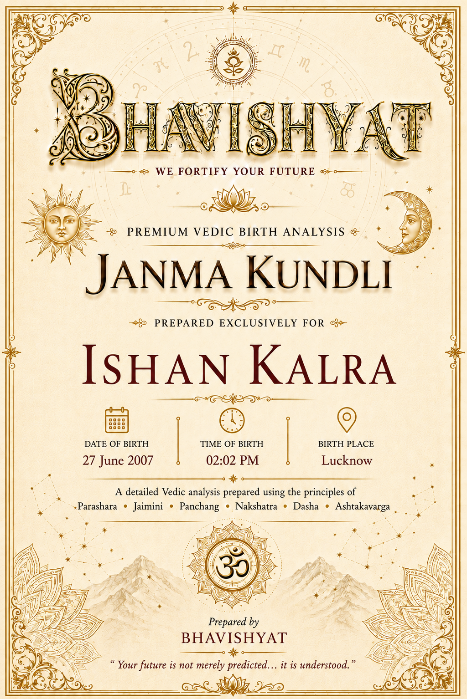
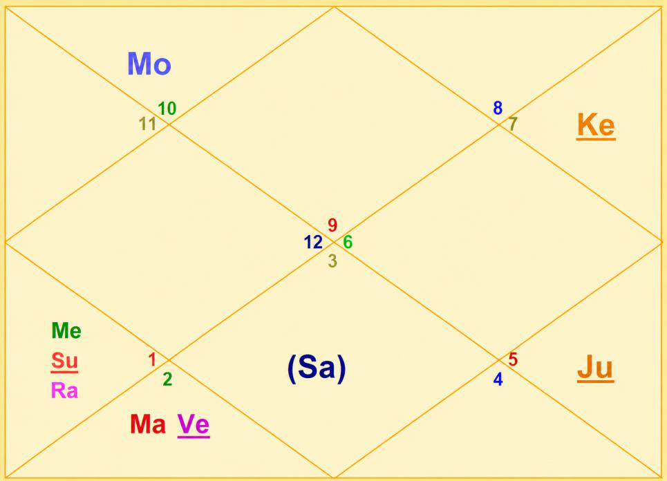

Janma Kundli • Ishan Kalra
Birth Details & Panchang
| Name | Ishan Kalra | Paksha | Krishna |
| Date of Birth | 14 April 2004 | Tithi | Dashami (10) |
| Time of Birth | 12:22 AM | Nakshatra | Shravana |
| Birth Place | Dehra Dun | Vaar | Tuesday |
| Longitude | 78°02' E | Yoga | Saadhya |
| Latitude | 30°19' N | Karan | Vanija |
| Ascendant | Sagittarius | Asc Lord | Jupiter |
| Tithi Lord | Moon | Tithi Deity | Yama |
| Nakshatra Lord | Moon | Nakshatra Deity | Vishnu |
| Yoga Deity | Savitri | Karan Deity | Indra, Nandi Devi |
| Yogi | Venus | Duplicate Yogi | Mars |
| Abhiyogi | Jupiter | Dagdha Rashi | Leo (5), Scorpio (8) |
Natal Chart (Rashi)

| Planet Distribution | Left (Invisible Half), Lower Half — beginning part of life more eventful | ||
| Ascendant | Sagittarius (Dhanu) | Moon / Sun Sign | Capricorn (Makara) / Aries (Mesha) |
| Malefic | Venus (Shukra), Moon (Chandra) | Shunya Nakshatra | Chitra, Swati |
| Maraka | Saturn (Shani) | Dasha Balance | 1M 7Y 14D |
| Badhaka | Mercury (Budha) | Mangalik | No |
| Birth Dasha | Mo-Ve-Ma (1-8-2) | ||
Janma Kundli • Ishan Kalra
Favourable Influences
| Benefic Years | 18, 21, 24, 27, 30, 33, 36, 39 | ||
| Favourable Days | Sunday, Thursday, Tuesday | ||
| Favourable Planets | Sun, Jupiter, Mars | ||
| Favourable Signs | Capricorn (10), Aquarius (11), Pisces (12), Leo (5) | ||
| Favourable Ratna | Yellow Sapphire | Favourable UpRatna | Topaz, Yellow Zircon, Yellow Tourmaline |
| Lucky Ratna | Ruby | Favourable Deity | Hanuman |
| Favourable Metal | Bronze | Favourable Colour | Yellow |
| Direction | North-East | Favourable Cereals | Gram |
| Favourable Plant | Ashoka | ||
| Favourable Temple | Jagannath Temple (Puri) | ||
Planets in Rashi Chart
| Planet | Lordship | Sign | Nakshatra | Nak. Lord | Nak. Count | Nav Tara | Char Karak |
|---|---|---|---|---|---|---|---|
| Sun | 9L | Aries (1) | Ashwini | Ketu | 7 N | 9 | DaraKarak (7H) |
| Moon | 8L | Capricorn (10) | Shravana | Moon | 1 N | 1 | Atmakarak (Life) |
| Mars | 5L, 12L | Taurus (2) | Rohini | Moon | 10 N | 2 | Amatyakarak |
| Mercury | 7L, 10L | Aries (1) | Ashwini | Ketu | 7 N | 6 | Gnatikarak (6H) |
| Jupiter | 1L, 4L | Leo (5) | Purva Phalguni | Venus | 17 N | 4 | Bhratrikaraka (3H) |
| Venus | 6L, 11L | Taurus (2) | Rohini | Moon | 10 N | 8 | Matrikarak (4H) |
| Saturn | 2L, 3L | Gemini (3) | Ardra | Rahu | 12 N | 5 | Putrakarak (5H) |
| Rahu | — | Aries (1) | Bharani | Venus | 8 N | 3 | — |
| Ketu | — | Libra (7) | Swati | Rahu | 21 N | 7 | — |
| Debilitated Planet(s) | — | Combust Planet(s) | Mercury |
| Retrograde Planet(s) | Jupiter, Mercury | ||
Sarvastakvarga & Houses
| Very Strong (35+) | 3H, 4H | ||
| Strong (31-35) | 2H, 7H | ||
| Above Average (28-30) | 10H | ||
| Below Average (24-27) | 1H, 9H, 11H, 12H | ||
| Weak (21-23) | 5H, 6H | ||
| Very Weak (<21) | 8H | ||
Janma Kundli • Ishan Kalra
Houses in Rashi Chart
| House | Sign | Planets | SAV | Lords | Aspect |
|---|---|---|---|---|---|
| 1H | Sagittarius (9) | — | 27 | — | Mars, Jupiter, Rahu |
| 2H | Capricorn (10) | Moon | 31 | 8L | — |
| 3H | Aquarius (11) | — | 37 | — | Ketu |
| 4H | Pisces (12) | — | 36 | — | Saturn |
| 5H | Aries (1) | Sun, Mercury, Rahu | 23 | 9L; 7L, 10L | Jupiter |
| 6H | Taurus (2) | Mars, Venus | 23 | 5L, 12L; 6L, 11L | — |
| 7H | Gemini (3) | Saturn | 32 | 2L, 3L | Ketu |
| 8H | Cancer (4) | — | 20 | — | — |
| 9H | Leo (5) | Jupiter | 26 | 1L, 4L | Mars, Saturn, Rahu |
| 10H | Virgo (6) | — | 29 | — | — |
| 11H | Libra (7) | Ketu | 27 | — | — |
| 12H | Scorpio (8) | — | 26 | — | — |
Bhinnashtak Varga (BAV)
| Sign | Sa | Ju | Ma | Su | Ve | Me | Mo | Ra |
|---|---|---|---|---|---|---|---|---|
| 9 | 3 | 4 | 4 | 5 | 5 | 6 | 0 | 1 |
| 10 | 3 | 4 | 3 | 5 | 5 | 6 | 5 | 3 |
| 11 | 4 | 6 | 5 | 5 | 6 | 5 | 6 | 1 |
| 12 | 5 | 4 | 4 | 5 | 7 | 7 | 4 | 6 |
| 1 | 4 | 3 | 2 | 4 | 5 | 3 | 2 | 5 |
| 2 | 2 | 7 | 3 | 3 | 3 | 3 | 2 | 4 |
| 3 | 2 | 5 | 6 | 5 | 3 | 6 | 5 | 2 |
| 4 | 3 | 3 | 1 | 2 | 3 | 4 | 4 | 3 |
| 5 | 1 | 5 | 3 | 2 | 6 | 5 | 4 | 5 |
| 6 | 3 | 5 | 4 | 3 | 4 | 5 | 5 | 2 |
| 7 | 5 | 5 | 2 | 4 | 3 | 2 | 6 | 6 |
| 8 | 4 | 5 | 2 | 5 | 2 | 2 | 6 | 5 |
Janma Kundli • Ishan Kalra
Vimshottari Dasha
Maha Dasha
| Dasha Lord | From | To |
|---|---|---|
| Moon | 29-Nov-1995 | 28-Nov-2005 |
| Mars | 28-Nov-2005 | 27-Nov-2012 |
| Rahu | 27-Nov-2012 | 28-Nov-2030 |
| Jupiter | 28-Nov-2030 | 27-Nov-2046 |
| Saturn | 27-Nov-2046 | 27-Nov-2065 |
| Mercury | 27-Nov-2065 | 27-Nov-2082 |
| Ketu | 27-Nov-2082 | 27-Nov-2089 |
| Venus | 27-Nov-2089 | 28-Nov-2109 |
| Sun | 28-Nov-2109 | 28-Nov-2115 |
Antar Dasha (Rahu Maha Dasha)
| AD Lord | From | To |
|---|---|---|
| Rahu | 27-Nov-2012 | 10-Aug-2015 |
| Jupiter | 10-Aug-2015 | 03-Jan-2018 |
| Saturn | 03-Jan-2018 | 09-Nov-2020 |
| Mercury | 09-Nov-2020 | 29-May-2023 |
| Ketu | 29-May-2023 | 16-Jun-2024 |
| Venus | 16-Jun-2024 | 16-Jun-2027 |
| Sun | 16-Jun-2027 | 10-May-2028 |
| Moon | 10-May-2028 | 09-Nov-2029 |
| Mars | 09-Nov-2029 | 28-Nov-2030 |
Pratyantar Dasha (Venus Antar Dasha)
| P. Dasha | From | To |
|---|---|---|
| Venus | 16-Jun-2024 | 15-Dec-2024 |
| Sun | 15-Dec-2024 | 08-Feb-2025 |
| Moon | 08-Feb-2025 | 10-May-2025 |
| Mars | 10-May-2025 | 13-Jul-2025 |
| Rahu | 13-Jul-2025 | 25-Dec-2025 |
| Jupiter | 25-Dec-2025 | 20-May-2026 |
| Saturn | 20-May-2026 | 09-Nov-2026 |
| Mercury | 09-Nov-2026 | 14-Apr-2027 |
| Ketu | 14-Apr-2027 | 16-Jun-2027 |
Janma Kundli • Ishan Kalra
Nav Tara Sequence
| Planet | Chara Karak | House | Lordship | Strength | Nakshatra | Lord | Placement |
|---|---|---|---|---|---|---|---|
| Moon | Atmakarak (Life) | 2H | 8L | Strong (31-35) | Shravana | Moon | 2H |
| Mars | Amatyakarak | 6H | 5L, 12L | Weak (21-23) | Rohini | Moon | 2H |
| Rahu | — | 5H | — | Weak (21-23) | Bharani | Venus | 6H |
| Jupiter | Bhratrikaraka (3H) | 9H | 1L, 4L | Below Avg (24-27) | Purva Phalguni | Venus | 6H |
| Saturn | Putrakarak (5H) | 7H | 2L, 3L | Strong (31-35) | Ardra | Rahu | 5H |
| Mercury | Gnatikarak (6H) | 5H | 7L, 10L | Weak (21-23) | Ashwini | Ketu | 11H |
| Ketu | — | 11H | — | Below Avg (24-27) | Swati | Rahu | 5H |
| Venus | Matrikarak (4H) | 6H | 6L, 11L | Weak (21-23) | Rohini | Moon | 2H |
| Sun | DaraKarak (7H) | 5H | 9L | Weak (21-23) | Ashwini | Ketu | 11H |
Birth Chart Nav Tara Chakra
| Moon (Janam) | 1 | Moon | 10 | Mars, Venus | 19 | |
| Mars (Sampat) | 2 | 11 | 20 | |||
| Rahu (Vipat) | 3 | 12 | Saturn | 21 | Ketu | |
| Jupiter (Kshem) | 4 | 13 | 22 | |||
| Saturn (Pratyari) | 5 | 14 | 23 | |||
| Mercury (Sadhak) | 6 | 15 | 24 | |||
| Ketu (Nidhan) | 7 | Sun, Mercury | 16 | 25 | ||
| Venus (Mitra) | 8 | Rahu | 17 | Jupiter | 26 | |
| Sun (Ati Mitra) | 9 | 18 | 27 |
Important Saturn Transits
| 1st Sade Sati | 26 Jan 2017 – 29 Mar 2025 | ||
| 2nd Sade Sati | 08 Dec 2046 – 05 Feb 2055 | ||
| 3rd Sade Sati | 16 Jan 2076 – 20 Mar 2084 | ||
| Kantak Shani | 03 Jun 2027 – 17 Apr 2030 | ||
| Ashtam Shani | 13 Jul 2034 – 27 Aug 2036 | ||
Janma Kundli • Ishan Kalra
Other Important Transits
| Type | Planet | House | SAV/BAV | From – To |
|---|---|---|---|---|
| Good | Saturn | 3H | 37, 4 | 29 Apr 2022 – 29 Mar 2025 |
| Good | Saturn | 4H | 36, 5 | 29 Mar 2025 – 23 Feb 2028 |
| Good | Jupiter | 3H | 37, 6 | 06 Apr 2021 – 14 Sep 2021; 21 Nov 2021 – 13 Apr 2022 |
| Good | Jupiter | 7H | 32, 5 | 14 May 2025 – 18 Oct 2025; 05 Dec 2025 – 02 Jun 2026 |
| Good | Rahu | 3H | 37, 1 | 13 May 2025 – 05 Dec 2026 |
| Good | Rahu | 11H | 27, 6 | 31 Jul 2031 – 16 Feb 2033 |
| Challenging | Saturn | 5H | 23, 4 | 03 Jun 2027 – 17 Apr 2030 |
| Challenging | Saturn | 8H | 20, 3 | 13 Jul 2034 – 27 Aug 2036 |
| Challenging | Rahu | 5H | 23, 5 | 12 Apr 2022 – 30 Oct 2023 |
| Challenging | Rahu, Ketu | 2H, 8H | — | 05 Dec 2026 – 23 Jun 2028 |
| Challenging | Jupiter | 8H | 20, 3 | 02 Jun 2026 – 31 Oct 2026; 25 Jan 2027 – 26 Jun 2027 |
Lal Kitab Birth Chart
| HN | Rashi | Planets | Varshphal Yr -23 (Apr'26–Apr'27) | Varshphal Yr -24 (Apr'27–Apr'28) |
|---|---|---|---|---|
| 1 | Sagittarius (9) | — | — | Ketu |
| 2 | Capricorn (10) | Moon | Mars, Venus | Sun, Mercury, Rahu |
| 3 | Aquarius (11) | — | — | Jupiter |
| 4 | Pisces (12) | — | — | Saturn |
| 5 | Aries (1) | Sun, Mercury, Rahu | — | Ketu |
| 6 | Taurus (2) | Mars, Venus | Moon | — |
| 7 | Gemini (3) | Saturn | Sun, Mercury, Rahu | — |
| 8 | Cancer (4) | — | — | Moon |
| 9 | Leo (5) | Jupiter | Jupiter | — |
| 10 | Virgo (6) | — | — | — |
| 11 | Libra (7) | Ketu | Saturn | — |
| 12 | Scorpio (8) | — | — | Mars, Venus |
Janma Kundli • Ishan Kalra
Part B — Panchang Insights
Tithi — Krishna Paksha Dashami
Critical thinking, perfectionism and preference for solitude. This Tithi ensures completion of any work started by the native. It gives support from social circle to native. However, native should avoid micromanagement and nitpicking in general.
Moon — Waning (~38% luminous)
Advisable to perform Ganga Snan by native and his parents periodically.
Tithi Deity — Yama
Maintaining discipline, as aligned with Tithi Deity Yama, promotes richness and wealth.
Vaar — Tuesday
Taking initiative, responsibility, action-oriented, courageous, assertive, competitive but impulsiveness and impatience. Gives technical skill and understanding of subject-matter. Visiting Hanuman Temple on Tuesday and reciting Hanuman Chalisa will align the energy of birth weekday and protect health.
Nakshatra — Shravana
Good listener, good speaker / counsellor, likes to get fame, expert in solving confusions, poet, loves to narrate and listen.
Yoga — Saadhya
Creative, intelligent; unique; not valued initially.
Karan — Vanija (Action)
Aptitude for business, negotiations, finance; excels in trade and commerce. Should serve cow for increasing benefic impact of Karan. Keep cow's image at home.
Dagdha Rashi — Leo (5), Scorpio (8)
Offer water to Sun in the morning to reduce malefic impact of burnt sign.
Janma Kundli • Ishan Kalra
Rashi Chart Overview
Planet Distribution
As per planetary distribution in Rashi Chart, the beginning part of the life would be more eventful than latter part.
Kal Sarp Yoga
There is no Kal Sarpa Dosh in the chart.
Nature, Personality & Appearance — Ascendant Sagittarius
Spiritual, adventurous, optimistic, wise, knowledgeable, brave, lucky.
Long face, graceful appearance, uneven walk, thick nose, ears, teeth and lips. Loves travel, philosophy, temples, law, new experiences; dislikes restrictions. Teaching, travel, spirituality; broadening horizons; wealthy.
Straightforward with a strong sense of justice. Conventional and business-like, sometimes restless and over-anxious. Eager to know everything. Cheerful, adaptable and content with a simple life. Lover of art and poetry with creative ability. Interested in philosophy and occult subjects. Exercises strict control over food, drink and relationships. Neat, orderly, methodical and diligent. Gains favour from government. Successful as a teacher, public speaker, religious head, judge or advocate etc.
Weakness — Sagittarius Ascendant
Reckless, blunt, commitment-averse, careless, over-optimistic, impatient.
Moon Sign — Capricorn
Prudent, thoughtful, logical and power-loving. Self-reliant and highly intellectual. Not optimistic until success is achieved. Works with facts and statistics. Excellent organiser. Suited for public positions, finance and technical fields. Seeks comfort at workplace.
Janma Kundli • Ishan Kalra
Impact of Planetary Placements
1st House
Gives name, fame, wealth; fond of chatpata / spicy food, although usually restriction on meal / diet due to health concern, weight, circumstances etc.; gets stone / hair in food frequently; travel for work; over confidence. Native gets job early, even may make him leave studies for job / work.
2nd House
Money minded, wealth yoga, good for health, wealth, education and support from mother and siblings, good trainer, usually stays above ground floor.
3rd House
Hard-working, persistent, courageous, image conscious, good writing skills, food lover, wins in tough condition; wealth yoga, prone to health issues related to blood; aggressive, dominant natured, should be careful in taking loan.
4th House
Multiple income source (native knows multiple ways of earning money), good at communication; good consultant; creative, sharp minded; jovial in nature.
5th House
Lucky, good for higher education, lucky for father, big house, good for siblings.
6th House
Wealth yoga; God blesses native.
Janma Kundli • Ishan Kalra
Impact of Planetary Placements (contd.)
7th House
Mature & responsible partner, property yoga; disciplined or health issues, political connections. Career growth. Gives money for sure. Good for business.
8th House
Wealthy, intelligent, growth in career; beware of overnight wealth scheme. Gives unique and out of the box ideas; unique problem solving skill.
9th House
Multiple source of income, charitable, much spending, complains about own luck — but lucky.
10th House
Success, fame, position of power, support of luck, stomach issues; hotheaded, difficult to work with someone else.
11th House
Good for business related / work related travel.
12th House
Yoga for blood related issues / surgery.
Mother's Health
Hearing (ear) related issues likely to mother.
Planetary Combinations
Government / Foreign Institutions
Gives problem from government; problem to father in relevant dasha, working with foreign government institutions.
Teaching & Sharp Mind
Good for teaching, sharp mind.
IT / Technical Creativity
Creativity, good for IT / technical field; unconventional ideas; sharp mind; knows shortcuts / tricks of trade.
Partner & SUVs
Fond of SUVs; supportive and courageous partner.
Janma Kundli • Ishan Kalra
12 Houses of Rashi Chart
- Active and tall, fiery temperament, magnetism, optimistic, adventurous, natural inclination for learning something new and gain of knowledge, much travel in life, marriage(s) in family / relatives around birth / in childhood. Questions religious practice, rituals. Good advisor, lucky in general. Native carries themselves well. The theme of life different in 1st and 2nd part. Blessed for learning and knowledge. Should be careful of ego of knowledge / work, away from home / birthplace (rise in life).
- Food related issues, irregular eating habit — prone, discipline in food habit crucial, money-saving becomes challenging, after lot of efforts. Dedicated towards family; wealth accumulation not easy.
- Earning through communication skills, networks, short travel work, communication related work. Money through social media.
- Spending a lot on house / vehicle (stretching budget), living away from birthplace / family, investment in real estate. Spiritual vibes in house. Water related painting at home.
- Sharp mind, good analytical skill, focused on education, teaching skills, ego issues / difference of opinion with father / father-figure such as boss, authority.
- Good debating skill, winning in arguments, inviting health issues through eating habits; wealth comes through service, loans etc.
- Good at public dealings, multitasker, multiple businesses.
- Moody and intuitive, mother's health may be a challenge; foreign source of income.
- Lucky for father, fond of traveling, good for higher studies.
- Workaholic nature, native keeps upgrading their skillset, working style. Critical of workplace / co-workers.
- Selective about gains / source of income; contacts with important people.
- Keep bed in very good state, as it is prone to get cluttered; avoid eating on bed; sleep disturbance usually, beware of investment cheatings.
Sarvashtakvarga — Yearly Outlook
| Tough Years | 21, 23 | ||
| Good Months of the Year | February – April | ||
| Challenging Months of the Year | May – June, July – August | ||
| Lucky People for Native | Capricorn (10), Aquarius (11), Pisces (12), Leo (5) | ||
| Unfavourable People for Native | Sagittarius (9), Aries (1), Taurus (2) | ||
| Aptitude | Good communication and analytical skills; connected with native place / own country; good for partnership, properties, wealth creation and support of luck | ||
| Favourable Months for Purchasing Property | February – March, June – July | ||
| Wealth-Giving Dasha / Antardasha | Mars, Moon, Venus, Mercury, Rahu | ||
| Challenging Dasha | May 2023 – June 2024 | ||
| Health Caution | Serious health issues or death in family / relatives between April 2025 – April 2026 | ||
Janma Kundli • Ishan Kalra
12 Houses of Rashi Chart (contd.)
- Luck supports native, good for health, higher studies, success and fame. Following traditions may become challenge; visiting temple / pilgrimage enhances luck.
- Good earnings through partnership, collaboration, trading etc.; change in profession / job after marriage.
- Aptitude for business, negotiation, trade; business / trading skill.
- Gets beautiful house; raj yoga; works for social welfare / religion; happiness through religious work; makes native influential.
- Good for education, intelligence, vision; education at distant place / foreign (some connection); lots of knowledge (multiple sources of income); creative nature.
- Strong competitive spirit; wins competition; very good for service sector; saves from health challenges; fighting spirit.
- Good knowledge of business; yoga for marriage of own choice; encouraging partner; partner may be associated with government / security organization.
- Living away / separated from family (esp. during Moon dasha); saves in big problem / trouble; gives wealth in Moon dasha; problem in eating habit.
Janma Kundli • Ishan Kalra
12 Houses of Rashi Chart (contd.)
- Questioning religious beliefs, traditions; not believing easily without proper logic; good education / understanding; understanding of nuances.
- Good career yoga; luck favour in profession; gets position of power; creative in work.
- May give revengeful feeling; earnings through loan / debt; gain from service sector. Dispute / litigation related career or some role in career.
- Expenses on disputes, health issues, loan; investing in debt instruments; difficult to remain in single job for long.
Karmic Remedies — Lal Kitab
- Offer food to red face monkey.
- Throw away if any unused or bad conditioned mixer / juicer / grinder or press.
- Avoid Tulsi and money plant (remove them).
- Never donate books / spiritual books. Don't fall in trap of sadhu / pandit / baba etc.
- Donate food to birds. Throw away grocery wrappers (packing material), if stored.
- Never donate liquor.
Abbreviations
A Sacred Dedication
With Love & Blessings
for Ishan Kalra's journey ahead
तद्विद्धि प्रणिपातेन परिप्रश्नेन सेवया।
उपदेक्ष्यन्ति ते ज्ञानं ज्ञानिनः तत्त्वदर्शिनः॥ ३४॥
आध्यात्मिक गुरु के पास जाकर सत्य को जानो। विनम्र होकर उनसे ज्ञान प्राप्त करने की जिज्ञासा प्रकट करते हुए ज्ञान प्राप्त करो और उनकी सेवा करो। ऐसा सिद्ध सन्त तुम्हें दिव्य ज्ञान प्रदान कर सकता है क्योंकि वह परम सत्य की अनुभूति कर चुका होता है।
"Learn the truth by approaching a spiritual master. Inquire from him submissively and render service unto him. The self-realized souls can impart knowledge unto you because they have seen the truth."
— Bhagavad Gita, Chapter 4, Verse 34
May Ishan Kalra walk his path with humility, curiosity and wisdom — ever learning, ever listening, and ever rising toward the greatness his chart holds within.